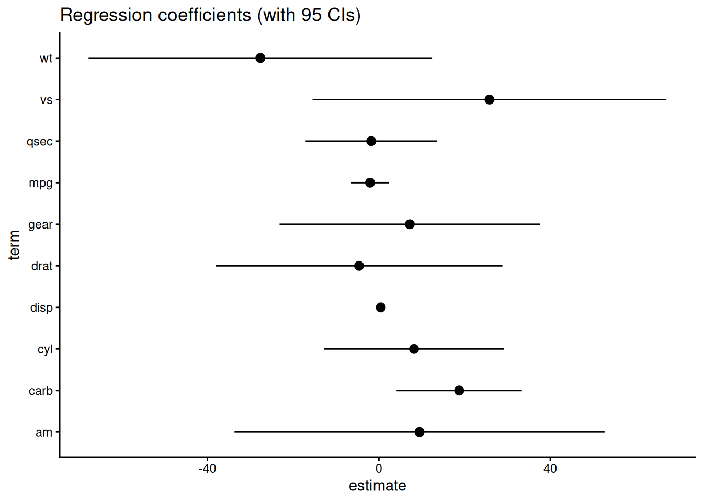
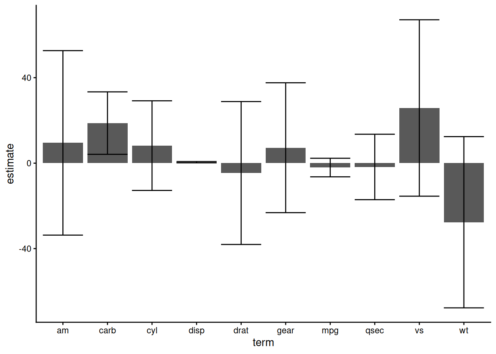
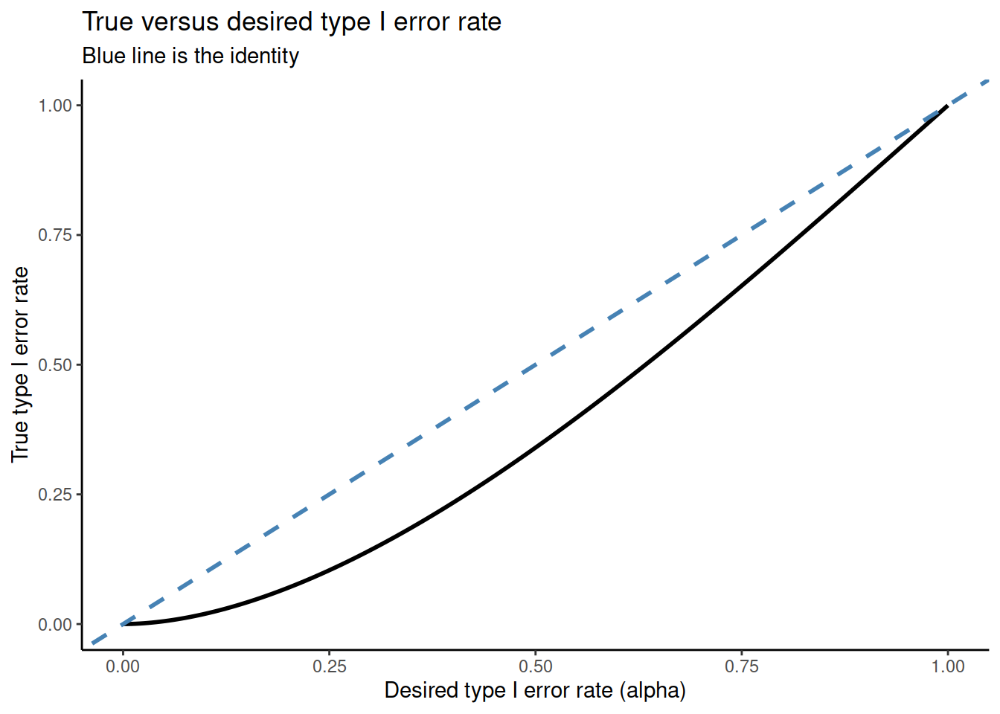

![]()

Summary
In this post I work through a recent homework exercise that illustrates why you shouldn’t compare means by checking for confidence interval overlap. I calculate the type I error rate of this procedure for a simple case. This reveals where our intuition goes wrong: namely, we can recover the confidence interval heuristic by confusing standard deviations and variances.
Checking confidence intervals for overlap
Sometimes you may want to check if two (or more) means are statistically distinguishable. Since proper inferential procedures can be a bit of a pain, you might be tempted to use a shortcut: plot the (\(\alpha\)-level) confidence intervals for the means and check if they overlap.
This might seem especially useful when someone sends you plots like:
In this case you might say, oh hey, the confidence intervals for the carb and qsec coefficients overlap, so those coefficients must be different1. Or you might get a plot like the following:

and do something similar. While this procedure is intuitive satisfying, you should avoid it because it doesn’t work.
Type I error rate for a simple case
To demonstrate what can go wrong, we’ll explicitly calculate the type I error rate for a simplified case. In particular, we’ll assume that we have two samples \(x_1, ..., x_n\) and \(y_1, ..., y_n\) from a \(\mathrm{Normal}(\mu, \sigma^2)\) distribution with known \(\sigma^2\). For this example, both samples are of size \(n\). Here the true mean for both samples is the same value, \(\mu\), and we’d like to know the probability that we reject the null of equal means using the overlapping confidence interval heuristic. That is, we want
\[ P(\text{confidence intervals overlap} | \text{sampling situation from above}) \]
There are two ways the confidence intervals can overlap. If \(\color{blue}{\bar x} < \color{blue}{\bar y}\), the upper confidence bound of \(\color{blue}{\bar x}\) can be greater than the lower confidence bound of \(\color{blue}{\bar y}\). The other situation is symmetric, and since \(P(\color{blue}{\bar x} < \color{blue}{\bar y}) = 0.5\), we can calculate the probability of type I error for the \(\color{blue}{\bar x} < \color{blue}{\bar y}\) case and multiply by two to get the overall probability of type I error.
Let’s translate the rejection condition into a mathematical statement. In particular, we reject when:
\[\begin{align} \color{blue}{\bar x} + \color{purple}{z_{1 - \alpha / 2}} \color{green} {\sigma \over \sqrt n} &> \color{blue}{\bar y} - \color{purple}{z_{1 - \alpha / 2}} \color{green} {\sigma \over \sqrt n} \end{align}\]
where \(\color{blue}{\bar x}\) and \(\color{blue}{\bar y}\) are the sample means, \(\color{purple} z_\alpha\) is the \(\alpha^{th}\) quantile of a standard normal, and \(\color{green} {\sigma \over \sqrt n}\) is the standard error of \(\color{blue}{\bar x}\) (and also \(\color{blue}{\bar y}\)).
Now we rearrange and see this is equivalent to
\[\begin{align} \color{blue}{\bar x} + \color{purple}{z_{1 - \alpha / 2}} \color{green} {\sigma \over \sqrt n} &> \color{blue}{\bar y} - \color{purple}{z_{1 - \alpha / 2}} \color{green} {\sigma \over \sqrt n} \\ \color{purple}{z_{1 - \alpha / 2}} \color{green} {\sigma \over \sqrt n} + \color{purple}{z_{1 - \alpha / 2}} \color{green} {\sigma \over \sqrt n} &> \color{blue}{\bar y} - \color{blue}{\bar x} \\ 2 \cdot \color{purple}{z_{1 - \alpha / 2}} \color{green} {\sigma \over \sqrt n} &> \color{blue}{\bar y} - \color{blue}{\bar x} \\ \sqrt 2 \cdot \color{purple}{z_{1 - \alpha / 2}} &> {\color{blue}{\bar y} - \color{blue}{\bar x} \over \sqrt 2 \cdot \color{green} {\sigma \over \sqrt n}} \end{align}\]
and at this point you may note that the right hand side looks suspiciously like a pivot that should be standard normal. Let’s work out the distribution of \(\color{blue}{\bar y} - \color{blue}{\bar x}\) to see if this is the case. Recall that both \(\color{blue}{\bar y}\) and \(\color{blue}{\bar x}\) are \(\text{Normal}(\mu, \color{green} \sigma^2 / n )\) random variables, and they are independent.
Adding two normals together gives us a new normal, and all that’s left to do is calculate the mean and variance of the new normal. To do this we need to use the following properties of expectation and variance:
\[\begin{align} \mathbb{E}(a \cdot X + b \cdot Y) &= a \cdot \mathbb{E}(X) + b \cdot \mathbb{E}(Y) \\ \mathbb{V}(a \cdot X + b \cdot Y) &= a^2 \cdot \mathbb{V}(X) + b^2 \cdot \mathbb{V}(Y) \end{align}\]
Applying these rules, we see that
\[\begin{align} \color{blue}{\bar y} - \color{blue}{\bar x} &\sim \text{Normal} \left(0, 2 \cdot \color{green} {\sigma^2 \over n} \right) \qquad \text{and also that} \\ {\color{blue}{\bar y} - \color{blue}{\bar x} \over \sqrt 2 \cdot \color{green} {\sigma \over \sqrt n}} &\sim \text{Normal}(0, 1) \end{align}\]
Now we can calculate our overall type I error probability
\[\begin{align} P(\text{type I error}) &= 2 \cdot P \left({\color{blue}{\bar x_1} - \color{blue}{\bar x_2} \over \sqrt 2 \color{green} {\sigma \over \sqrt n}} > \sqrt 2 \cdot \color{purple}{z_{1 - \alpha / 2}} \right) \\ &= 2 \cdot P \left(Z > \sqrt 2 \cdot \color{purple}{z_{1 - \alpha / 2}} \right) \\ &= 2 \cdot (1 - \Phi(\sqrt 2 \cdot \color{purple}{z_{1 - \alpha / 2}} )) \end{align}\]
where \(\Phi\) is the CDF of a standard normal. Effectively, we’ve picked up an extra factor of \(\sqrt 2\) here. To see this, consider:
\[\begin{align} P(\text{type I error}) &= 2 \cdot (1 - \Phi(\textcolor{purple}{z_{1 - \alpha / 2}} )) &\text{throw out the $\sqrt 2$!} \\ &= 2 \cdot (1 - (1 - \alpha / 2)) \\ &= 2 - 2 + 2 \cdot \alpha / 2 \\ &= \alpha \end{align}\]
So if we drop the \(\sqrt 2\) term, we get what we want!
In practice, though, the \(\sqrt 2\) is still there, and we have this expression \(2 \cdot (1 - \Phi(\sqrt 2 \cdot \color{purple}{z_{1 - \alpha / 2}} ))\), which is a bit hard to parse. To get an idea of what this looks like, I’ve plotted \(\alpha\) (used to construct the confidence intervals for mean) against the actual type I error:

This plot indicates that the actual type I error is always lower than the desired type I error rate for this problem. That is, our heuristic about overlapping confidence intervals is far too conservative and will be systematically underpowered.
What went wrong
At first, your intuition may suggest that this confidence interval thing is a reasonable testing procedure, but clearly something is wrong with it. Where is our intuition leading us astray?
Let’s go back to that missing factor of \(\sqrt 2\).
Remember that we found the variance \(\color{blue}{\bar y} - \color{blue}{\bar x}\) using the rule \(\mathbb{V}(a \cdot X + b \cdot Y) = a^2 \cdot \mathbb{V}(X) + b^2 \cdot \mathbb{V}(Y)\) and it was \(2 \cdot \color{green} {\sigma^2 \over n}\). To get the standard error, we take the square root and get \(\sqrt 2 \cdot \color{green} {\sigma \over \sqrt n}\).
But if we had accidentally have worked on the standard deviation scale instead, and mistakenly assumed
\[\begin{align} \text{se}(a \cdot X + b \cdot Y) = a^2 \cdot \text{se}(X) + b^2 \cdot \text{se}(Y) \qquad \text{this is wrong!} \end{align}\]
Now we would miscalculate and determine that
\[\begin{align} \text{se}(\color{blue}{\bar y} - \color{blue}{\bar x}) = \color{green} {\sigma \over \sqrt n} + \color{green} {\sigma \over \sqrt n} = 2 \color{green} {\sigma \over \sqrt n} \qquad \text{this is also wrong!} \end{align}\]
If we standardize \(\color{blue}{\bar y} - \color{blue}{\bar x}\) by this incorrect standard error, it’s equivalent to the calculation we did above, the one that resulted in a type I error rate of \(2 \cdot (1 - \Phi(\sqrt 2 \cdot \color{purple}{z_{1 - \alpha / 2}} ))\) instead of our desired \(\alpha\)!
So our missing factor of \(\sqrt 2\) appears if we forget that confidence intervals work on the standard-deviation-scale, and we accidentally apply our variance-scale intuition to the problem. Minkowski’s inequality tells us that, for this particular setup, our mistake will always result in overestimating the true variance of \(\color{blue}{\bar y} - \color{blue}{\bar x}\), and thus we have a systematically underpowered test.
Conclusion
There are a bunch of heuristics for determining if means are different based on confidence interval overlap. You shouldn’t take them too seriously. People have written great papers on this, but I seem to have misplaced my references at the moment.
For an interesting comparison of some of the many correct ways to compare means, check out Andrew Heiss’ recent blog post. You may also enjoy David Darmon’s very similar discussion on confidence interval procedures. He ends with the following thought-provoking call to action:
Left as an exercise for the reader: A coworker asked me, “If the individual confidence intervals don’t tell you whether the difference is (statistically) significant or not, then why do we make all these plots with the two standard errors?” … Develop an answer that (a) isn’t insulting to non-statisticians and (b) maintains hope for the future of the use of statistics by non-statisticians.
In future posts I plan build off this idea and explore statistics as a primarily sociological problem.
Correction: Originally this post used \(\color{purple}{t_{1 - \alpha / 2, \, n-1}}\), but \(\color{purple}{z_{1 - \alpha / 2}}\) is the appropriate quantile for the sampling distribution of \(\color{blue}{\bar y} - \color{blue}{\bar x}\).